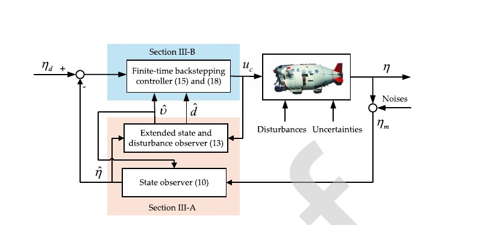
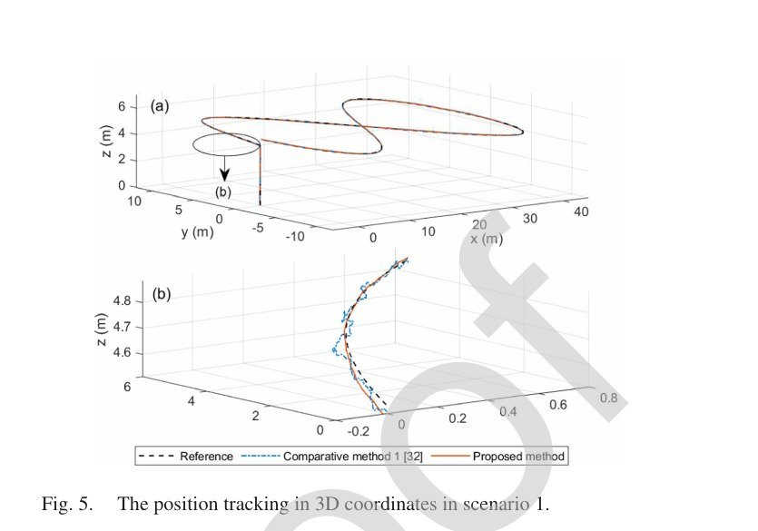
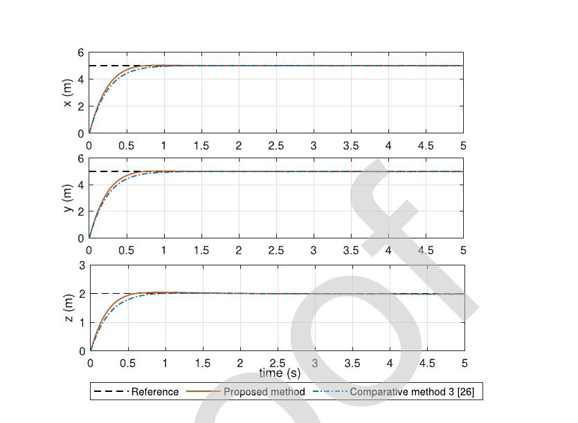

方星：载人深潜器多重不确定性下的有限时间控制发表于 IEEE TIV
方星教授作为第一作者的研究成果 Observer-Based Finite-Time Control of Crewed Submersible Vehicle Against Multiple Uncertainties 被 IEEE Transactions on Intelligent Vehicles 接收（2026 年 10 月 28 日）。论文把基于模型的状态观测器、扩张状态与扰动观测器、有限时间反步控制组合成一个复合方案，在测量噪声、不可测速度状态与未知外扰同时存在时，让载人深潜器在给定时间内收敛到期望轨迹。

问题：噪声、不可测状态与外扰同时存在
载人深潜器工作在高压、复杂海流与不可预测潮汐的环境中，位置与姿态测量带有噪声，速度信息通常无法直接测得，水动力系数还存在约 20% 的参数摄动。传统单自由度反馈结构要同时承担跟踪精度与抗扰能力，只能在两者之间折中；把状态估计、扰动补偿与控制器分开设计，又很难给出整个闭环系统的有限时间收敛保证。
方法：两个观测器加一个有限时间反步控制器
- 基于模型的状态观测器：充分利用深潜器的模型知识重建真实状态，而不是靠高增益压制模型缺失。仿真中带宽取 ωi = 1 即可稳定工作；作为对比的有限时间观测器（FTO）在同样带宽下已经失效，需要提高到 ωi = 3。
- 扩张状态与扰动观测器：把未建模动态、参数摄动与外部干扰合并为集总扰动，在给定的收敛时间内估计出来，供控制律前馈补偿。
- 有限时间反步控制：在观测值基础上设计复合控制律，用齐次性性质与 Lyapunov 定理证明闭环系统有限时间收敛，瞬态响应更快、也更可预测。
结果：三个场景分别验证观测器与控制律
- 场景 1 考察状态观测器：与有限时间观测器相比，三维跟踪误差的 RMSE 降低约 35.3%，ITAE 降低约 45.4%，控制信号也更平滑。
- 场景 2 考察扰动观测器：与不补偿扰动的方案相比，三维跟踪误差的 RMSE 降低约 81.3%，ITAE 降低约 88.0%。
- 场景 3 考察有限时间控制律：阶跃参考下约 0.7 s 稳定，常规渐近反步控制需要 1.2 s，调节时间缩短约 41.7%。
- 三种场景下控制信号幅值与对比方法相当，计算以代数与简单微分运算为主，具备艇载实时实现的可行性。

